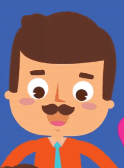

|  | Миний аавыг Түвшингэдэг. 1970 оны 1 сарын 18-нд төрсөн. Малын эмч мэргэжилтэй. Манай аав айлын хлёрдох хүүхэд 1 ах, 3 дүүтэй. |
|---|
| Миний ээжийг Эрдэнэцэцэг гэдэг. 1972 оны 4 сарын 16-нд төрсөн. Нягтлан бодогч мэргэжилтэй. Манай ээж айлын бага хүүхэд дээрээ 2 эгч, 7 ахтай. |
|---|
| Миний ахыг Нинжбадгар гэдэг. 1995 оны 3 сарын 23-нд төрсөн. Тогооч мэргэжилтэй. Эхнэрийг нь Алтанцэцэг гэдэ. 1 хүү, 1 охинтой. |
|---|